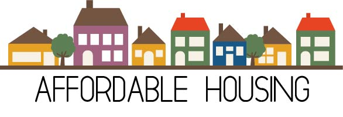

Rebut
This is only partially true as there are many statistics in which it is proven that housing discrimination is a very big issue still happening today
Real Estate agents and home buyers have come up with new ways to be racists. Because of racial discrimination laws, racists must be much more subtle when discriminating. They are forced to use loopholes in the For example, when a person of race is looking for a house, agents will say they have no listings available for them but a white family with similar budgets and interests will be shown houses. In 2016, there were over 28,000 complaints by minorities about housing discrimination. This proves that despite federal legislation, discrimination still exists. Cities that are notoriously bad with housing discrimination are Dallas, Chicago, Detroit and Atlanta.